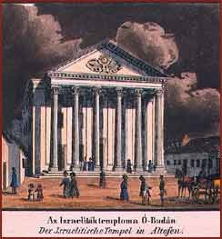

in Vasquez’s series of maps (1837)
The Neoclassicist synagogue in Óbuda, designed by András Landherr, was consecrated in 1821.
|  | ||
|
Drawing by Franz Wiess in Vasquez’s series of maps (1837) The Neoclassicist synagogue in Óbuda, designed by András Landherr, was consecrated in 1821. | ||